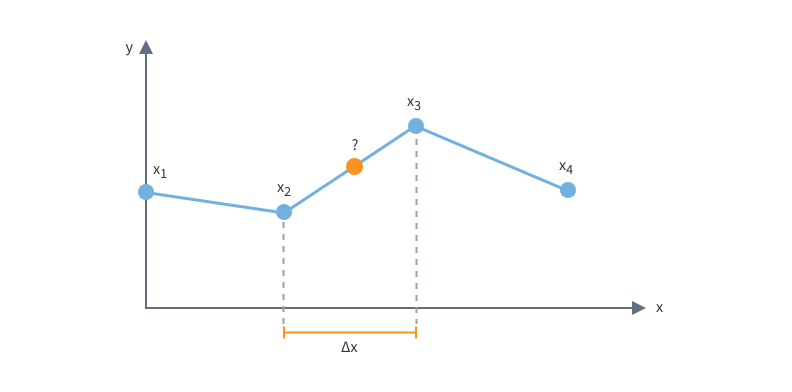
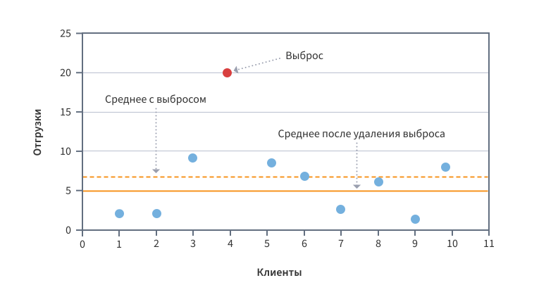
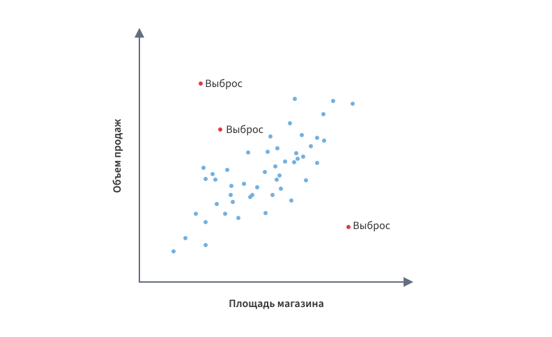

© IGP, февраль 2025 г.
Интерполяция — это метод нахождения неизвестных промежуточных значений некоторой функции по имеющемуся дискретному набору ее известных значений. Примером такой функции является ряд, значения которого — это наблюдения, зафиксированные через определенный интервал времени.
Точки $x_1,x_2,…x_n$ называются узлами интерполяции, их совокупность — интерполяционной сеткой, а расстояние между ее соседними узлами — шагом интерполяции, который может быть как равномерным, так и неравномерным. Задача заключается в поиске интерполирующей функции $F(x_i)=y_i$. Иными словами, интерполяция позволяет узнать, какие значения принимает функция в точках, не являющихся ее узлами.
В настоящее время существует множество различных методов интерполяции. Выбор наиболее подходящего из них определяется требованием к точности, вычислительной сложности, гладкости интерполирующей функции, количеству точек данных и т.д.
Наиболее простым методом является линейная интерполяция, когда предполагается, что промежуточные точки лежат на прямых, соединяющих ее узлы.
Интерполирующая функция в этом случае имеет вид: \[ f(x)=f(x_2) + \frac {f(x_3) - f(x_2)} {x_3-x_2} (x - x_2) \]
Если наблюдения фиксировались редко и шаг интерполяции большой, то данный метод может оказаться слишком грубым. Поэтому более часто используют более продвинутые методы: интерполяцию полиномами (формула Ньютона, полиномы Лагранжа), сплайн-функциями и т.д.
Термин «интерполяция» впервые ввел английский математик Джон Валлис в 1656 году.
В технологиях анализа данных интерполяция используется для восстановления пропущенных значений, а также замены аномальных (выбросов).
Выбросами называются значения, которые не укладываются в общую модель поведения анализируемого процесса. Они сильно отличаются от окружающих данных и могут быть вызваны как ошибками измерений, так и некорректным вводом данных, или являться результатом их сильной изменчивости.
Выбросы являются следствием:
Выбросы могут быть как одномерными,
так и многомерными.
Перед выполнением аналитической обработки выбросы необходимо подавить или удалить, поскольку они могут вызвать некорректную работу алгоритмов и привести к искажению результатов анализа данных.
{kind=link}
{kind=link}